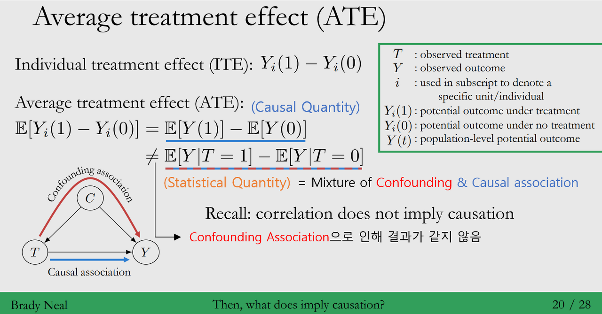
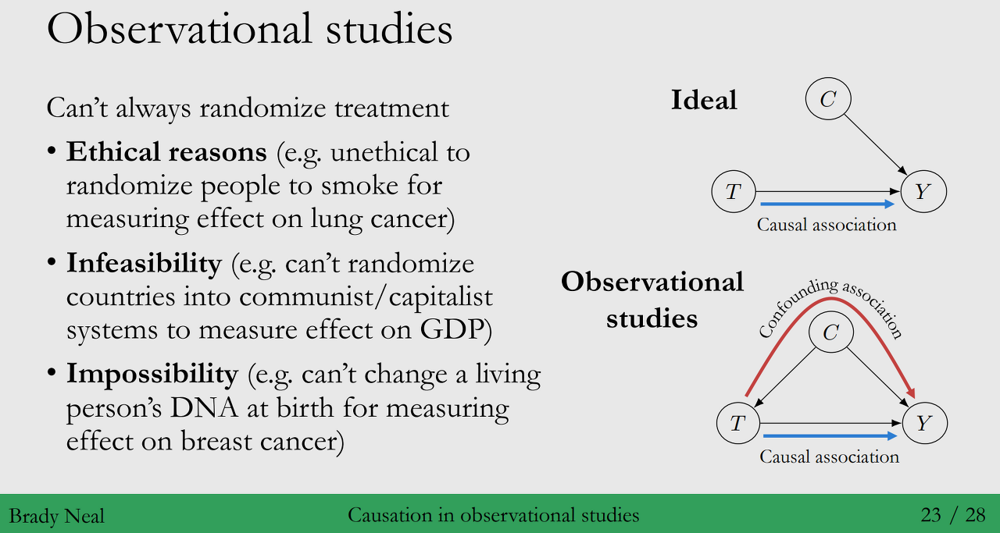

Contents
- Causal Inference 란 무엇인가?
- 심슨의 역설 (Simpson’s Paradox)
- 상관관계는 인과관계를 의미하지 않는다
- Causation in Observational studies
◦ 강의 영상 링크 : Chapter 1 - A Brief Introduction to Causal Inference (Course Preview)
작성된 내용 중 개선점이나 잘못된 부분이 있다면 댓글로 알려주세요!
(1) Causal Inference 란 무엇인가?
Causal Inference is concerned with a very specific kind of prediction problem :
Predicting the results of an action, manipulation, or Intervention
“Making Things Happen” (2003, Woodwrad)
- 정의 : 현상(문제)에 대한 원인을 찾고 해당 원인에 대한 효과를 추론하는 것
- 목표 : 발생한 현상에 대한 ‘Why’ 라는 질문에 대답하는 것 (Causal Structure를 기반으로)
- Example : Effect of \(X\) (독립변수) on \(Y\) (종속변수)
- 이번 할인 이벤트(\(X\))로 고과금 PU(\(Y\))가 증가한 것 같은데, 어느 정도 효과가 있었을까요?
- 어떠한 캠페인(\(X\))을 노출시키면, CTR(\(Y\))를 늘릴 수 있을까요?
- 인과관계의 3가지 단계 (The Ladder of Causation)
Association : \(P(Y|observe(X))\) < Supervised Learning >
◦ 관찰된 데이터를 바탕으로 변수간의 연관성을 파악하는 단계 (What If I see ?)Intervention : \(P(Y|do(X))\) < \(do\) : 실험 개입(통제)의 의미 >
◦ 만약 \(X\)(개입, 행동)으로 인해, \(Y\)(결과)가 어떻게 변화하는지 파악하는 단계Counterfactuals (Counter to fact) : 가정법
◦ 가상의 현실 (실제로 관측되지 않는 상황)을 상상하는 단계
◦ 실제로 일어나지 않았지만, 해당 상황이 발생했다면 (\(X'\)) 결과(\(Y\))가 달라졌을까?
◦ 인과추론의 근본적인 문제 (Fundamental Problem of Causal Inference, 2장)

(2) 심슨의 역설 (Simpson’s paradox)
- 정의 : 데이터를 Subgroup으로 나눠서 보았을 때와 전체 데이터를 합해서 봤을 때,
결과가 서로 다른 경우 (통계적 연관성이 유지되지 않는 경우) - 예시 : COVID-27에 대한 치료법
◦ 목적 : COVID-27에 확진된 환자의 사망율을 낮추는 Treatment (A, B)를 선택
◦ 상황 : 치료법 B는 A보다 더 귀함 (치료법 A를 받는 비중 : 73%, B를 받는 비중 : 27%)◦ 데이터 해석 :
- 데이터 전체로 본 경우 : 치료법 A를 받은 환자 사망율은 치료법 B보다 낮음
- Subgroup으로 나눠서 본 경우 : 각 환자 Condition별 사망율은 치료법 A가 B보다 높음
◦ 동일한 데이터인데, 결과가 다른 이유는 무엇일까요?
→ Weighted Sum : 치료법 A, B에 대한 사망율의 각 Condition(Subgroup)에 대한 가중치가 다르기 때문입니다.<Non-uniformity of allocation of people to groups>
◦ 환자의 사망율을 낮추려면 어떤 치료법을 선택해야 할까요? 환자의 상태를 모른다면, 치료법을 제공할 수 없는 걸까요?
→ 데이터의 Casual Structure에 따라, 치료법 선택해야 합니다!

(3) 상관관계는 인과관계를 의미하지 않는다
- Correlation : 엄밀하게는 변수간 선형적인 통계적 관계를 의미 (Linear Statistical Dependence)
- Spurious Correlations : 서로 연관성이 없는 변수가 높은 상관관계를 보이는 경우
→ 데이터를 통한 의사결정 과정에서, 잘못된 판단을 하게 만들 수 있습니다
- 통계학를 배우면 항상 나오는 이야기 입니다. 사례를 통해 이해해보도록 해요!
- 사례 1 : 연간 니콜라스 케이지의 영화 출현 횟수와 연간 익사 사망사고 건수
◦ 연간 니콜라스 케이지의 영화 출현 횟수와 연간 익사 사망건수는 높은 상관관계를 보입니다.
◦ 그러면, 케이지가 많은 수영하는 사람들이 수영장에 뛰어들도록 부추긴걸까요? No No!

- 사례 2 : 신발을 신고 자는 것과 두통으로 일어났을 때 두통을 호소하는 것
◦ 상황 : 신발을 신고 자는 것과 두통으로 일어났을 때 두통을 호소하는 것은 큰 상관관계가 존재합니다.
◦ 목표 : 우리는 해당 실험에서, 신발을 신고 자는 것이 일어났을 때 두통을 유발하는 지 인과관계를 찾고 싶어요!◦ 방해요인 : 두 변수의 공통으로 영향을 주는 변수 < 전날 술을 마신 것 >
- Confounder : \(X\)(원인)와 \(Y\)(결과)에 동시에 영향을 주는 변수
- Collider : \(X\)(원인)와 \(Y\)(결과)에 동시에 영향을 받는 변수
→ 인과추론을 어렵게 만드는 요인 중 하나입니다.◦ What to do?
→ 일어났을 때 두통이 있는 것(\(Y\))의 원인이 신발을 신고 잠에든 경우(\(X\))라고 결론을 내리려면, 전날 음주 여부 (Confounder)에 대한 부분을 통제해야 합니다.

Total Association = Confounding Association + Causal Association
→ 이 식을 통해 본 것 처럼, 상관관계는 인과관계를 의미하지 않습니다!
Correlation이 Causation과 같다는 것은 Cognitive Bias에 해당합니다. (인지편향, 경험에 의한 비논리적 추론)
◦ Availability heuristic : 의사결정 시, 사람의 머릿속에 당장 떠오르는 것에 의존하는 경향
◦ Motivated Reasoning : 결론에 대한 목표를 정해놓고, 그 주제에 대해서만 생각하는 경향
◦ 해당 인지적 편향으로 인해, 신발을 신고 자서 일어 났을 때 두통이 발생(?)
◦ Bias : Causation과 Association을 다르게 만드는 요소
→ 이러한 과정에서 Correlation을 Causation으로 착각하는 오류가 발생하게 됩니다.

→ 앞으로 인과추론에 방해되는 요소를 어떻게 통제할 지에 (Bias Adjustment) 대해 학습할 예정이에요!
(4) Causation in Observational studies
→ 관측 환경 (Observational Studies, 통제되지 않은 환경)에서, 인과추론을 어떻게 할까요?
◦ 인과추론을 바라보는 관점 : Potential Outcomes (Chapter 2), Causal Models (Chapter4)
◦ 실험 설계 : Experiment Design (Chapter 5, 6)
◦ 인과효과 추정 : IPTW / Meta-Learner (Chapter 7), DID (Chapter 10), IV (Chapter 9)
◦ 그 외에도 여러가지 추정 방법이 존재합니다.
- Treatment : 인과 효과를 추정하기 위한 원인 변수에 해당
- Treatment Effect : Treatment에 따른 효과
◦ ITE (Individual Treatment Effect) : Treatment에 대한 개개인의 효과를 측정
◦ ATE (Average Treatment Effect) : Treatment에 대한 전체 평균 효과를 측정
→ 개개인에 대해 ITE를 파악할 수 없는 경우가 존재합니다. 그래서 ATE를 사용하곤 합니다.

- Observational Study (관측 연구) vs Experimental Study (실험 연구)
◦ Experimental Study : 연구자가 설명변수의 할당 수준에 대해 개입, 조절이 가능
◦ Observational Study : 연구자가 X (설명변수)에 대해 조작, 개입없이 단순히 관찰
< ~대부분 Analyst가 분석하는 환경은 Observational Study 이지 않을까요??..~>
a. Potential(Counterfactual) Outcomes 관점
- 정의 : Treatment Option에서 볼 수 있는 모든 잠재적인 결과를 반영한 Causal Effect를 바라보는 관점
< 실제로 관측되지 않은 Counterfactual한 결과도 포함 > - 예시 :
사례 1) 광고 노출과 클릭율
◦ Treatment : 유저에게 게임 광고 노출 (Treatment Option - 캠페인 A, 캠페인 B)
◦ Outcome : \(Y\_i(1)\) - 클릭, \(Y\_i(0)\) - 클릭하지 않음사례 2) 약과 두통약
◦ Treatment : 약을 먹는 경우 - \(do(T=1)\) / 약을 먹지 않는 경우 - \(do(T=0)\)
◦ Outcome : \(Y\_i(1)\) - 두통 해소, \(Y\_i(0)\) - 두통 지속
- Causal Quantity(Estimand, 인과 추정값)와 Statistical Quantity(Estimand, 통계적 추정값) 비교
◦ 상황 : Causal Quantity는 Counterfactuals로 인해, 직접적으로 계산할 수 없습니다.
◦ 대안 : 해당 부분 대신, Treatment가 주어진 상황에서의 Outcome인 Statistical Quantity로 계산할 수 있어요.◦ 문제 : Confounding Association으로 Causal Quantity ≠ Statistical Quantity
→ 그러면, Confounding Association을 어떻게 없애줄 수 있을까요?
◦ 해결방법 : Randomized Controlled Trial (RCT)가 해당 부분을 해결하는데 답을 줄 수 있습니다!
◦ RCT : Control Group (대조군)과 Treatment Group (실험군)을 랜덤하게 할당해,
X가 Y에 영향을 미쳤는지 확인하기 위한 실험 설계입니다. (실무에서는 A/B 테스트라고 해요)
◦ RCT 기대효과 :
1) 대조군과 실험군의 그룹간 동질성을 가정할 수 있음 (Comparable)
2) 잠재적인 Confounder를 평균적으로 동일하게 만들어주는 효과 (Confounder 효과 제거)
→ 이로 인해, Causal Effect 측정이 가능해 집니다!◦ Randomization 어려움 : 매우 이상적이나, 아래 3가지 이유로 항상 Treatment를 랜덤화하는 건 어렵습니다…..
1) 윤리적 이유 : 담배를 피지 않는 사람에게, 실험을 위해 담배를 피우게 한다면???
2) 실행 가능하지 않음 : Country-level의 실험인 경우, 전세계의 대통령이 되어야해요…
3) 불가능 : 암의 효과를 측정하기 위해, 태어날 때 사람의 DNA를 바꾸는 건 불가능합니다…
4) 번외로, A/B 테스트를 하는데 자원(시간과 비용)이 많이 들어가요ㅜㅜ


- 앞으로 나올 내용 : 관측 환경이 실험 환경과(RCT)비슷하게 끔 만들어 주는 가정에 대해 배웁니다.
→ Identifiability Conditions (Causal Quantity와 Statistical Quantity가 같아지기 위한 조건)
◦ Unconfoundedness : 실험군과 대조군은 교환 (비교) 가능!
◦ Positivity : Causal Effect를 계산하기 위한 수학적인 가정!
◦ No Interference : 나의 Outcome은 다른 사람의 Outcome에 영향을 받지 않아야 함!
◦ Consistency : Treatment에 대해서는 일관된 결과를 보여줘야 함!
b. Causal Models 관점
- 정의 : Causal Graph (DAG)를 바탕으로, Causal Effect를 바라보는 관점
- 질문 :
Q : Causal Model을 바탕으로 Causal Effect를 측정하기 위해 어떠한 방법이 필요할까요?
A : Confounding Association이 생기지 않도록 Confounder를 조절/통제하는 방법이 필요해요.
아래 그림은 W가 주어졌을 때, Confounding Association이 사라진 부분을 나타내고 있습니다.
이 때, W (그림에서는 C)를 Sufficient adjustment set이라고 정의해요
→ Chapter 3, 4에서 Confounder를 조절하기 위한 방법을 배웁니다! (Back/Frontdoor Adjustment, Do-calculus)
Q : 인과관계를 파악하는 구조를 발견해야 할 것 같은데, 어떻게 발견할 수 있나요?
A : 해당 내용은 Causal Discovery (Chapter 11/12)에서 공부할 예정입니다.

To be continued) 앞으로 인과추론의 Framework와 인과 효과를 추정하기 위한 방법에 대해 배울 예정입니다.
Reference
◦ Lecture Notes : 2021 Summer Session on Causal Inference (박지용 교수님) [Link]
◦ Blog : Individualized treatment effect inference (van der Schaar 교수님, Figure1) [Link]
Citation
@online{shin2023,
author = {shin, Jinsoo},
title = {Chapter 1. {Motivation}},
date = {2023-10-27},
langid = {en}
}